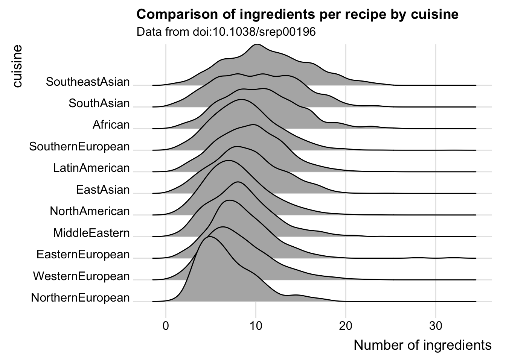

## Reproducibly download files to a temp location and unzip
library("tidyverse")
recipes_data_dir <- tempdir()
s2_zip <- tempfile(fileext = ".zip")
s3_zip <- tempfile(fileext = ".zip")
download.file(url = "https://static-content.springer.com/esm/art%3A10.1038%2Fsrep00196/MediaObjects/41598_2011_BFsrep00196_MOESM2_ESM.zip", destfile = s2_zip)
download.file(url = "https://static-content.springer.com/esm/art%3A10.1038%2Fsrep00196/MediaObjects/41598_2011_BFsrep00196_MOESM3_ESM.zip", destfile = s3_zip)
unzip(s2_zip, exdir = recipes_data_dir)
unzip(s3_zip, exdir = recipes_data_dir)I can accurately identify the day I started learning R properly as the 30th of April 2015. That’s the day I was invited for an interview on the 26th of May at University of Oxford which had an interview exercise that required me to create a dummy 10 minute introduction to dataviz with a tool of my choice, using an interesting dataset. At the time, I knew Mathematica (and the Wolfram Language) incredibly well - but it was clear from the description of the task that the interviewers would massively prefer folks who knew R or Python.
Python was clearly a mess of choices, I had to decide between Python 2.x or 3.x and there wasn’t a self-contained solution for building web applications. Learning R and Shiny was the obvious choice in just over three weeks, as was the dataset I’d focus on.
One of my absolute favourite datasets comes from a paper published in Nature, “Flavor Network and the principles of food pairing” ( doi:10.1038/srep00196). The supplementary materials include two files:
doi:10.1038/srep00196). The supplementary materials include two files:
- srep00196-s2.csv: details the number of flavour compounds shared between over 1500 ingredients.
- srep00196-s3.csv: contains over 57,000 recipes categorised by cuisine.
In the paper the authors are interested examining whether different cuisines prefer recipes with highly similar or dissimilar tasting ingredients, amongst other things. I’ve embedded one of the highly beautified hair ball networks from the paper, and I definitey recommend reading this Open Access paper for some interesting observations about human cuisines. Now, it turned that out this was a fairly challenging dataset to first start learning R with, let’s grab the data from Nature 1 and have a look at why.
The recipes are in a horrendous format. It’s not so bad that the first four lines are comments, that’s easy to handle, but rows of the data do not have consistent lengths. The first recipe contains 6 items and the second has 17, which means the data’s not rectangular and the standard importers aren’t going to be that happy.
readLines(file.path(recipes_data_dir, "srep00196-s3.csv")) %>%
head()[1] "#"
[2] "# Flavor network and the principles of food pairing"
[3] "# Yong-Yeol Ahn, Sebastian E. Ahnert, James P. Bagrow, and Albert-Laszlo Barabasi"
[4] "# "
[5] "African,chicken,cinnamon,soy_sauce,onion,ginger"
[6] "African,cane_molasses,ginger,cumin,garlic,tamarind,bread,coriander,vinegar,onion,beef,cayenne,parsley,wheat_bread,yogurt,vegetable_oil,egg"I really struggled to understand what to do about this, so I asked my first R question on StackOverflow, “Importing and analysing non-rectangular .csv files in R”. My question was asked back in 2015 before the tidyverse was born, and so the best solution at the time was using read.table:
read.table(file.path(recipes_data_dir, "srep00196-s3.csv"),
sep = ",",
as.is = TRUE,
fill = TRUE,
na.strings = "") %>%
head() V1 V2 V3 V4 V5 V6 V7
1 African chicken cinnamon soy_sauce onion ginger <NA>
2 African cane_molasses ginger cumin garlic tamarind bread
3 African butter pepper onion cardamom cayenne ginger
4 African olive_oil pepper wheat beef onion cardamom
5 African honey wheat yeast <NA> <NA> <NA>
6 African tomato cilantro lemon_juice onion cayenne scallion
V8 V9 V10 V11 V12 V13 V14 V15
1 <NA> <NA> <NA> <NA> <NA> <NA> <NA> <NA>
2 coriander vinegar onion beef cayenne parsley wheat_bread yogurt
3 cottage_cheese garlic brassica <NA> <NA> <NA> <NA> <NA>
4 cumin garlic rice leek <NA> <NA> <NA> <NA>
5 <NA> <NA> <NA> <NA> <NA> <NA> <NA> <NA>
6 <NA> <NA> <NA> <NA> <NA> <NA> <NA> <NA>
V16 V17
1 <NA> <NA>
2 vegetable_oil egg
3 <NA> <NA>
4 <NA> <NA>
5 <NA> <NA>
6 <NA> <NA>At the time I continued to analyse and visualise the data ready for my interview exercise, for which I also learned how to use GitHub! The outputs I used in my presentation are still available in my RecipeVisualisations repo. It turns out on reflection that there were two bad things that I did at the time:
- I didn’t know enough R to have a reproducible workflow so have lost some of my tidying scripts
read.tableuses a bad heuristic to decide how many columns there are in the data! The longest recipe is not 17 ingredients long.
Now I’m much more proficient with R and have the wonderful purrr library to process these recipes into a tibble with the ingredients stored as a list:
recipe_lists <- readLines(file.path(recipes_data_dir, "srep00196-s3.csv")) %>%
strsplit(",")
recipe_lists <- recipe_lists[5:length(recipe_lists)]
recipes_df <- tibble(
cuisine = map_chr(recipe_lists, 1),
ingredients = map(recipe_lists, tail, -1)
)
recipes_df %>%
head()# A tibble: 6 × 2
cuisine ingredients
<chr> <list>
1 African <chr [5]>
2 African <chr [16]>
3 African <chr [9]>
4 African <chr [10]>
5 African <chr [3]>
6 African <chr [6]> It’s now much easier to operate on these lists of ingredients by using map* functions within mutate, for instance I can create a column containing the number of ingredients. Now we discover the joint longest recipes contain a ridiculous 32 ingredients.
recipes_df %>%
mutate(n.ingredients = map_int(ingredients, length)) %>%
arrange(desc(n.ingredients))# A tibble: 56,498 × 3
cuisine ingredients n.ingredients
<chr> <list> <int>
1 EasternEuropean <chr [32]> 32
2 SouthernEuropean <chr [32]> 32
3 NorthAmerican <chr [30]> 30
4 NorthAmerican <chr [29]> 29
5 NorthAmerican <chr [29]> 29
6 NorthAmerican <chr [29]> 29
7 EasternEuropean <chr [28]> 28
8 NorthAmerican <chr [28]> 28
9 NorthAmerican <chr [27]> 27
10 NorthAmerican <chr [26]> 26
# … with 56,488 more rowsWith our ingredients in a list column it’s now also easy to filter recipes by specific ingredients:
recipes_df %>%
filter(str_detect(ingredients, "garlic"))# A tibble: 16,893 × 2
cuisine ingredients
<chr> <list>
1 African <chr [16]>
2 African <chr [9]>
3 African <chr [10]>
4 African <chr [12]>
5 African <chr [11]>
6 African <chr [8]>
7 African <chr [9]>
8 African <chr [12]>
9 African <chr [15]>
10 African <chr [10]>
# … with 16,883 more rowsI’m going to come back to using this dataset in the future to explore graph theory and machine learning examples, but for now let’s finish like it’s Summer 2017 with a ridgeline plot from the excellent ggplot2 extension ggridges:
library("ggridges")
recipes_df %>%
mutate(n.ingredients = map_int(ingredients, length)) %>%
group_by(cuisine) %>%
mutate(median.ingredients = median(n.ingredients)) %>%
ungroup() %>%
arrange(desc(median.ingredients)) %>%
mutate(cuisine = fct_reorder(cuisine, median.ingredients)) %>%
ggplot(aes(x = n.ingredients, y = cuisine)) +
geom_density_ridges(scale = 3) +
theme_ridges() +
xlab("Number of ingredients") +
ggtitle("Comparison of ingredients per recipe by cuisine",
subtitle = "Data from doi:10.1038/srep00196")
In future whenever I want to work with this data I’ll import it through the following script:
library("tidyverse")
recipes_data_dir <- tempdir()
s2_zip <- tempfile(fileext = ".zip")
s3_zip <- tempfile(fileext = ".zip")
download.file(url = "https://static-content.springer.com/esm/art%3A10.1038%2Fsrep00196/MediaObjects/41598_2011_BFsrep00196_MOESM2_ESM.zip", destfile = s2_zip)
download.file(url = "https://static-content.springer.com/esm/art%3A10.1038%2Fsrep00196/MediaObjects/41598_2011_BFsrep00196_MOESM3_ESM.zip", destfile = s3_zip)
unzip(s2_zip, exdir = recipes_data_dir)
unzip(s3_zip, exdir = recipes_data_dir)
recipe_lists <- readLines(file.path(recipes_data_dir, "srep00196-s3.csv")) %>%
strsplit(",")
recipe_lists <- recipe_lists[5:length(recipe_lists)]
recipes_df <- tibble(
cuisine = map_chr(recipe_lists, 1),
ingredients = map(recipe_lists, tail, -1)
)Footnotes
Frustratingly, these data sets are attached to the paper exclusively as supplementary materials, and so these are fragile links. Data should really have distinct DOI, modern journals like Springer Nature’s Scientific Data do this.↩︎
Reuse
Citation
BibTeX citation:
@online{hadley2018,
author = {Charlotte Hadley and Charlie Joey Hadley},
title = {Recipes for Learning},
date = {2018-02-18},
url = {https://visibledata.co.uk/posts/2018-02-18-recipes-for-learning},
langid = {en}
}
For attribution, please cite this work as:
Charlotte Hadley, and Charlie Joey Hadley. 2018. “Recipes for
Learning.” February 18, 2018. https://visibledata.co.uk/posts/2018-02-18-recipes-for-learning.